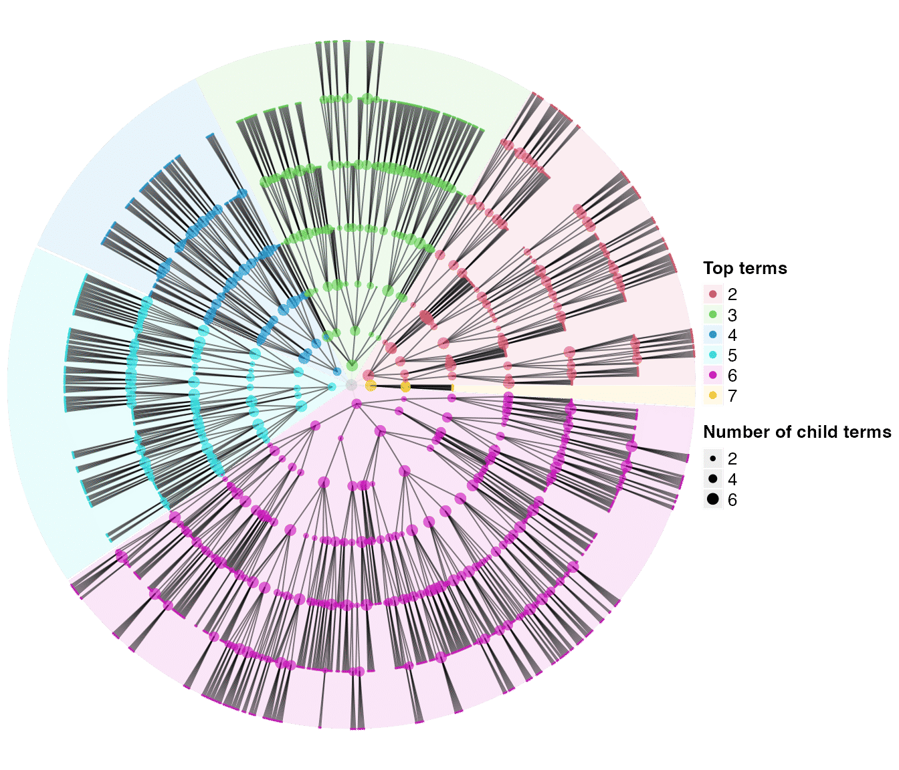
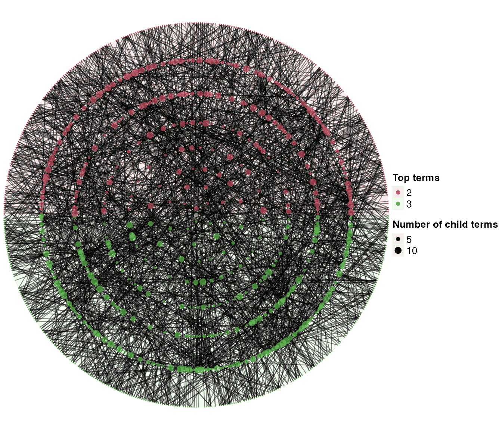
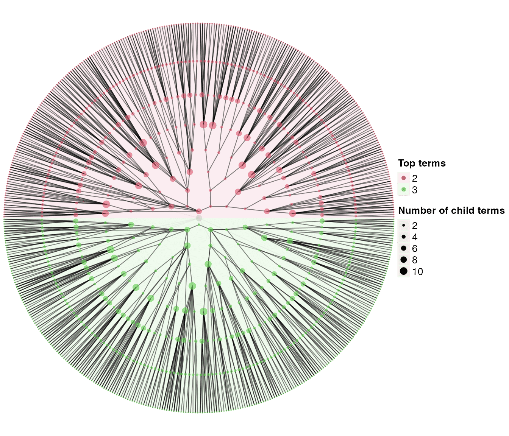

simona provides functions for generating random DAGs. A random tree is first generated, later more links can be randomly added to form a more general DAG.
Random trees
dag_random_tree() generates a random tree. By default it generates a binary tree where all leaf terms have depth = 9.
library(simona)
set.seed(123)
tree1 = dag_random_tree()
tree1## An ontology_DAG object:
## Source: dag_random_tree
## 1023 terms / 1022 relations / a tree
## Root: 1
## Terms: 1, 10, 100, 1000, ...
## Max depth: 9
## Aspect ratio: 56.89:1
dag_circular_viz(tree1)
Strictly speaking, tree1 is not random. The tree is growing from the root. In dag_random_tree(), there are several arguments that can be used for generating random trees.
-
n_children: Number of child terms. It can be a single value where each term will the same number of child terms. The value can also be a range, then the number of child terms will be randomly picked in that range. -
p_stop: A branch can stop growing based on this probability. On a certain step of the tree growing, let’s denote the set of leaf terms asL, then, in the next round,floor(length(L)*p_stop)leaf terms will stop growing, while the remaining leaf terms will continue to grow. If a leaf term continues to grow, it will be linked ton_childrenchild terms ifn_childrenis a single value, or pick a number from the range of[n_children[1], n_children[2]].
The tree growing stops when the number of total terms exceeds max.
So the default call of dag_random_tree() is identical to:
dag_random_tree(n_children = 2, p_stop = 0, max = 2^10 - 1)We can these arguments to some other values, such as:
tree2 = dag_random_tree(n_children = c(2, 6), p_stop = 0.5, max = 2000)
tree2## An ontology_DAG object:
## Source: dag_random_tree
## 1999 terms / 1998 relations / a tree
## Root: 1
## Terms: 1, 10, 100, 1000, ...
## Max depth: 7
## Aspect ratio: 105.71:1
dag_circular_viz(tree2)
Random DAGs
A more general random DAG is generated based on the random tree. Taking tree1 which is already generated, the function dag_add_random_children() adds more random children to terms in tree1.
dag1 = dag_add_random_children(tree1)
dag1## An ontology_DAG object:
## Source: dag_add_random_children
## 1023 terms / 1115 relations
## Root: 1
## Terms: 1, 10, 100, 1000, ...
## Max depth: 9
## Avg number of parents: 1.09
## Avg number of children: 1.03
## Aspect ratio: 56.89:1 (based on the longest distance from root)
## 52.78:1 (based on the shortest distance from root)
dag_circular_viz(dag1)
There are three arguments that controls new child terms. We first introduce two of them.
-
p_add: For each term, the probability that it is selected to add new child terms. -
new_children: Once a term is selected, the number of new children it is linked to.
Let’s try to generate a more dense DAG:
dag2 = dag_add_random_children(tree1, p_add = 0.6, new_children = c(2, 8))
dag2## An ontology_DAG object:
## Source: dag_add_random_children
## 1023 terms / 2550 relations
## Root: 1
## Terms: 1, 10, 100, 1000, ...
## Max depth: 9
## Avg number of parents: 2.50
## Avg number of children: 1.59
## Aspect ratio: 56.89:1 (based on the longest distance from root)
## 32.22:1 (based on the shortest distance from root)
dag_circular_viz(dag2)
By default, once a term t is going to add more child terms, it only selects new child terms from the terms that are:
- lower than
t, i.e. with depths less than t’s depth in the DAG. - not the child terms that
talready has.
Then in this subset of candidate child terms, new child terms is randomly picked according to the numbers set in new_children.
The way to randomly pick new child terms can be implemented as a self-defined function. This function accepts two arguments, the dag object and an integer index of “current term”. In the following example, we implemented a function which only pick new child terms from term t’s offspring terms.
add_new_children_from_offspring = function(dag, i, new_children = c(1, 8)) {
l = rep(FALSE, dag_n_terms(dag))
offspring = dag_offspring(dag, i, in_labels = FALSE)
if(length(offspring)) {
l[offspring] = TRUE
l[dag_children(dag, i, in_labels = FALSE)] = FALSE
}
candidates = which(l)
n_candidates = length(candidates)
if(n_candidates) {
if(n_candidates < new_children[1]) {
integer(0)
} else {
sample(candidates, min(n_candidates, sample(seq(new_children[1], new_children[2]), 1)))
}
} else {
integer(0)
}
}
dag3 = dag_add_random_children(tree1, p_add = 0.6,
add_random_children_fun = add_new_children_from_offspring)
dag3## An ontology_DAG object:
## Source: dag_add_random_children
## 1023 terms / 1583 relations
## Root: 1
## Terms: 1, 10, 100, 1000, ...
## Max depth: 9
## Avg number of parents: 1.55
## Avg number of children: 1.25
## Aspect ratio: 56.89:1 (based on the longest distance from root)
## 32.22:1 (based on the shortest distance from root)
dag_circular_viz(dag3)
Session info
## R version 4.3.1 (2023-06-16)
## Platform: x86_64-apple-darwin20 (64-bit)
## Running under: macOS Ventura 13.2.1
##
## Matrix products: default
## BLAS: /Library/Frameworks/R.framework/Versions/4.3-x86_64/Resources/lib/libRblas.0.dylib
## LAPACK: /Library/Frameworks/R.framework/Versions/4.3-x86_64/Resources/lib/libRlapack.dylib; LAPACK version 3.11.0
##
## locale:
## [1] C/UTF-8/C/C/C/C
##
## time zone: Europe/Berlin
## tzcode source: internal
##
## attached base packages:
## [1] stats graphics grDevices utils datasets methods base
##
## other attached packages:
## [1] simona_1.1.3
##
## loaded via a namespace (and not attached):
## [1] sass_0.4.7 xml2_1.3.5 shape_1.4.6
## [4] stringi_1.7.12 digest_0.6.33 magrittr_2.0.3
## [7] evaluate_0.22 grid_4.3.1 RColorBrewer_1.1-3
## [10] iterators_1.0.14 circlize_0.4.15 fastmap_1.1.1
## [13] foreach_1.5.2 doParallel_1.0.17 rprojroot_2.0.3
## [16] jsonlite_1.8.7 GlobalOptions_0.1.2 promises_1.2.1
## [19] ComplexHeatmap_2.16.0 purrr_1.0.2 codetools_0.2-19
## [22] textshaping_0.3.7 jquerylib_0.1.4 shiny_1.6.0
## [25] cli_3.6.1 rlang_1.1.1 crayon_1.5.2
## [28] scatterplot3d_0.3-44 ellipsis_0.3.2 cachem_1.0.8
## [31] yaml_2.3.7 tools_4.3.1 parallel_4.3.1
## [34] memoise_2.0.1 colorspace_2.1-0 httpuv_1.6.11
## [37] GetoptLong_1.0.5 BiocGenerics_0.46.0 mime_0.12
## [40] vctrs_0.6.4 R6_2.5.1 png_0.1-8
## [43] matrixStats_1.0.0 stats4_4.3.1 lifecycle_1.0.3
## [46] stringr_1.5.0 S4Vectors_0.38.2 fs_1.6.3
## [49] IRanges_2.34.1 clue_0.3-65 cluster_2.1.4
## [52] ragg_1.2.6 pkgconfig_2.0.3 desc_1.4.2
## [55] later_1.3.1 pkgdown_2.0.7 bslib_0.5.1
## [58] Rcpp_1.0.11 glue_1.6.2 systemfonts_1.0.5
## [61] xfun_0.40 knitr_1.44 xtable_1.8-4
## [64] rjson_0.2.21 igraph_1.5.1 htmltools_0.5.6.1
## [67] rmarkdown_2.25 Polychrome_1.5.1 compiler_4.3.1